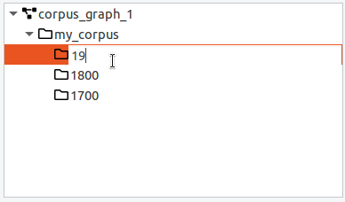
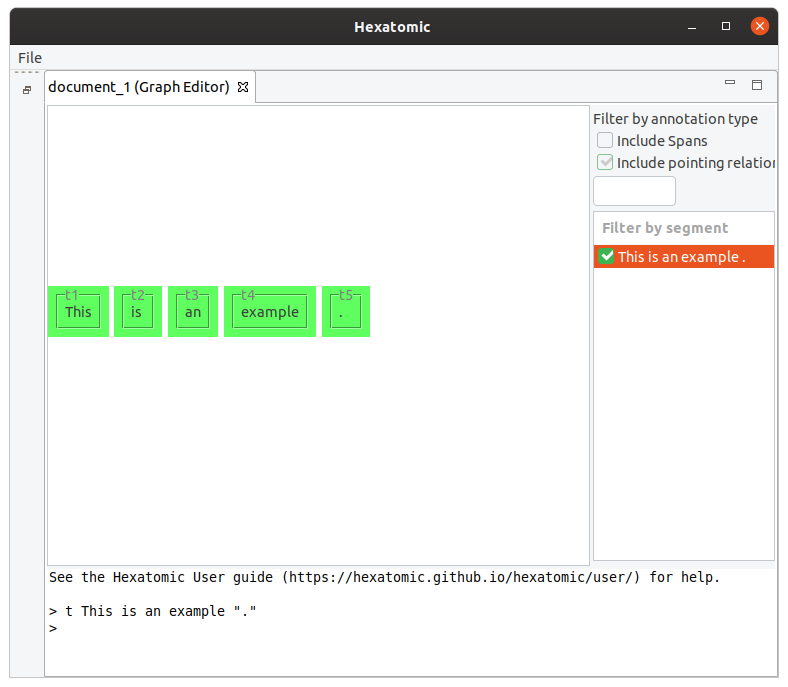
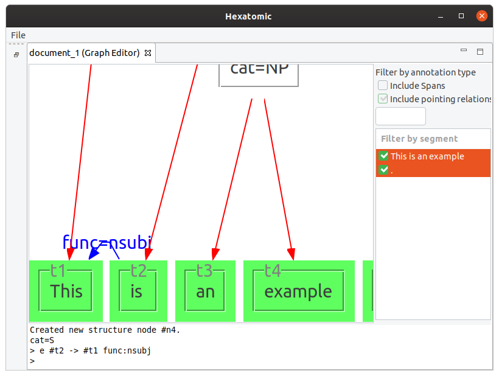
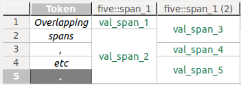

Welcome to Hexatomic!
You are reading the user documentation for Hexatomic.
What is Hexatomic?
Hexatomic is an extensible OS-independent platform for deep multi-layer linguistic corpus annotation.
Research projects want to answer very specific research questions. When they use corpora, they may have to use specific software that can
- handle the format their corpus data is available in, or
- provide annotation functionality for the annotation types they want to use.
Projects may also need additional software to search their data. If they have corpora in more than one format, they may have to duplicate the number of software tools they have to use in order to answer their research question. And if this software doesn't exist yet, they have to implement a new tool from scratch.
Hexatomic aims to alleviate this situation, and reduce the number of tools a project will have to use (and install, and maintain, and learn) to 1.
How does it do that?
- It works with a generic graph-based data model, that can handle many different types of annotations.
- It includes a converter framework, which allows the import of a multitude of different corpus formats, provides them in the generic graph-based model for manipulation (corpus-building, annotation, cleaning, etc.), and can export the corpus data to yet another multitude of corpus and other data formats.
- It includes powerful corpus search functionality, that offers the usual free text- and regex-based search, but can also search across linguistic structures and build complex queries across layers.
What if Hexatomic cannot handle my specific annotation type/use case?
Hexatomic is built to be extensible through plugins. If it doesn't offer what you are looking for, you don't have to implement a new tool from scratch, but can instead build a plugin that does what you need. On top, the existing functionality, the data model, import and export functionality, and search come for free with that.
What kind of software is Hexatomic?
Hexatomic is software for the desktop. You download it to your computer. It does not need an internet connection to run, and therefore you can also use it in the field, or on the train en route to a conference.
Specifically, it is an Eclipse e4 application implemented in Java.
Hexatomic is free and open source under the Apache License, Version 2.0.
How can Hexatomic be used?
You can use Hexatomic to do, for example, any or all of the following:
Build a corpus from scratch
Merge different corpora into a new one
Annotate an existing corpus
Error correct a corpus
Search a corpus
Hexatomic installation & start
Download
- Go to the download site for the latest release of Hexatomic:
https://github.com/hexatomic/hexatomic/releases/latest. - Download the
.zipfile for your operating system:- Linux: Download
hexatomic-<version>-linux.gtk.x86_64.zip - Mac OS: Download
hexatomic-<version>-macosx.cocoa.x86_64.zip - Windows: Download
hexatomic-<version>-win32.win32.x86_64.zip
- Linux: Download
- Extract the downloaded
zipfile to a directory of your choice.1
For Linux and Windows, that's it. You can now run Hexatomic.
On macOS, you need to move the Hexatomic application from the "Download" folder to the "Applications" folder by dragging it to "Applications" in the Finder.
Run Hexatomic
- Go to the folder into which you have unzipped the Hexatomic download (e.g. "Applications" on macOS).
- Run Hexatomic by
- double-clicking on the launcher file in a file manager, or
- starting the launcher file from the command line.
- In Linux, the launcher file is simply called
hexatomicand can be started with./hexatomic. - In Windows, the launcher file is simply called
hexatomic.exeand can be started withhexatomic. - For Mac OS X, we provide an
.appfile calledhexatomic.app.
macOS-specific instructions
When you start Hexatomic for the first time on macOS, use the context menu and choose "Open" from there.

You will be asked if you want to open Hexatomic, although it has not been downloaded from a trusted source. This dialog appears because we don't have an expensive Apple Developer ID and therefore cannot sign Hexatomic releases with it. Choose to open Hexatomic anyway. This dialog will be only shown on the first start, and you can open Hexatomic regularly afterwards.
Some archive extraction software may not work, and Hexatomic may not start. In this case, try 7zip, which should work.
Usage
This section describes how to use the user interface of Hexatomic. See one of the following sub-sections for more details.
Working with projects
Hexatomic works on a single Salt project at any one time.
A project consists of a directory containing a project file (saltProject.salt) and a number of sub-directories containing the Salt document files.
To open a project in Hexatomic, click on File in the main menu and select the option Open Salt Project. A new file dialog window will come up. Choose the folder containing the project file you want to open, and open it.
After opening a Salt project, you can select Save Salt Project, which will save the project as Salt XML files in the structure explained at the beginning of this section into the same folder that they have been loaded from. Alternatively, you can select Save Salt Project As... to select a different location to save the files to. You can see the currently loaded Salt project path in the Window title. If there are unsaved changes in any document or in the corpus structure, a * will be appended to the title.
Saving the project will always save all documents, not only the openend ones. If you close an editor, the changes are not lost as long as you save the project afterwards.
To start a new and empty project in the same application window, choose Start New Salt Project.
If an action would discard unsaved changes, you are always given the choice to cancel it.
You can undo and redo changes with the menu entries Undo and Redo in the Edit menu or by clicking on the toolbar buttons.
Importing and exporting corpora
Per default, Hexatomic will store its project in its native data format Salt. You can, however, import and export corpora from and to different formats.
Supported file formats
Currently, Hexatomic supports the following external file formats:
- PAULA XML
- EXMARaLDA *.exb files
- GraphAnno (import only)
- Plain text *.txt files (import only)
Import an existing corpus
To import existing corpora, which are not stored in Salt, choose the Import entry in the File menu. This will start a wizard, which will guide you through all necessary import steps.
First, select the directory that contains the corpus files you want to import.
For most corpus formats, the selected directory name will become the root corpus name.
E.g., in the following example this would be example-corpus.

Most formats use a single file for each document, with the exception of PAULA XML, which uses a sub-directory containing files for each annotation layer.
After clicking on Next > in the wizard, you will see the format selection page. The wizard will try to auto-detect and preselect the correct format in the given directory and select it for you. Make sure Hexatomic selected the correct corpus format and press Finish to import the corpus with the default settings. Some formats allow various configuration settings, that can be changed by clicking on Next > instead.


After clicking on Finish the import will start and show the progress. The wizard will close automatically after the import process finishes. You can also abort the import process by clicking on the red square stop button right next to the progress bar.

Export to a different format
Exporting a corpus project is similar to importing one. You select Export from the File menu, select an output path and the output format and finish the wizard. The output path should not contain the root corpus name, since this will be appended automatically. A project must be saved to disk and must not have any unsaved changes before you can export it.
Editing the corpus structure
Each corpus project can consist of multiple documents which are organized into
- corpus graphs,
- corpora, and
- sub-corpora.
Even in simple projects with only one document, this corpus structure exists and can be used to extend or re-organize existing corpora. The minimal structure for a corpus with one document is therefore: One corpus graph containing one corpus containing one document.
In Hexatomic, the corpus structure is always visible in the special “Corpus Structure” editor.

Corpus graphs
Corpora, sub-corpora and documents are organized in a hierarchical structure, the so-called corpus graph. A project in Hexatomic can have more than one corpus graph, but for most projects a single corpus graph is sufficient. In the special case where you import different corpora from different annotation formats into the same Hexatomic project for merging them, you will need more than one corpus graph.
In an empty project, just click on the “Add“ button to add a new corpus structure.

The default “Add“ button is context-sensitive, and will add elements "intelligently", depending on which type of element is currently selected in the corpus structure. To explicitly choose the element to add, click on the small arrow on the right side of the button and a drop-down menu with the different options will appear.

If you delete a corpus graph, all of its documents and corpora will also be deleted. Before you delete a (sub-) corpus, delete all of its child elements first.
Corpora and sub-corpora
Inside a corpus graph, the different corpora and sub-corpora are organized as a hierarchy. A corpus graph should only contain one top-level corpus, whose name is often used as corpus name when exporting the corpus to a different format. To add a sub-corpus, select the parent corpus, click on the arrow on the right side of the “Add” button and choose “(Sub-) Corpus”. You can edit the name of a corpus by double-clicking on its entry and pressing enter when finished.

Documents
When a corpus is selected, the default action for the "Add" button is to add a new document. When a document is selected, the "Add" button will create a new sibling document in the same parent corpus. Documents must have a corpus as a parent and contain the base text and linguistic annotations. You can move a document from one (sub-) corpus to another by dragging and dropping it.

It is possible to apply a filter, to only show documents whose names contain a certain string.

Opening an editor
To open an editor for a document of the corpus, first select the corpus in the "Corpus Structure" editor on the left. Then, use the right mouse button to open the context menu for the selected document and click "Open with Text Viewer". This will open a new view where the text of the document is displayed.
Graph Editor
The graph editor is for visualizing and annotating annotation graphs. It provides a general visualization that displays all possible types of annotation in a graph of annotatable elements.

Filters
On the right-hand side of the interface, you can select which segment of the current document to show in the graph view. For large graphs, it can take some time until its layout is calculated. The checkbox next to the segment indicates if this calculation is finished. You can select more than one segment to display, by holding the Ctrl key while clicking on additional segments. You can also show a whole range of segments by holding the Shift key and clicking on the last segment of the range you want to select.
You can also choose to display spans and their annotations in the graph, by checking the checkbox Include spans. Spans are special nodes to collect a number of tokens and to annotate them all at once. If you want to learn more about spans, please read the Salt documentation.
Similarly, you can show or hide pointing relations between nodes in the graph by using the checkbox Include pointing relations.
And you can filter the segments that include annotations of a specific name by using the filter text field above the list of segments.
Graph view
The left-hand side of the graph editor is taken up by the graph view, which displays the nodes and relations in the data model of the current document.
You can navigate the graph view as follows:
-
Zoom in and out by using the mouse wheel.
- You will zoom in to where your mouse cursor is.
-
Zoom in and out by using using the keyboard.
- If you press and hold the Ctrl key, you can zoom in with the + key and zoom out with the - key.
-
Move the area of the graph that is displayed by using the keyboard:
- The Arrow keys move the area in the respective direction, and PgUp and PgDown move it up and down.
- If you press and hold the Shift key and then use the arrow or paging keys, you move more quickly.
-
Move the area of the graph that is displayed by using the mouse wheel and function keys:
- If you hold down Shift key while moving the mouse wheel, you can scroll up and down.
- If you hold down Ctrl key while moving the mouse wheel, you can scroll left and right.
-
You can center the view around a specific point in the graph by double-clicking that point.
If you don't like the layout of the graph, you can change it by simply dragging nodes with your mouse.
Console
On the bottom of the graph editor, there is the console which you can use to actually edit the graph. How to do this is explained in detail in the next section, Editing the graph.
Editing the graph
The graph editor contains a console, which you can use to manipulate the annotation graph.
You first enter a command by entering it as text behind the so-called prompt > and pressing Enter.

Commands typically start with its name and a list of arguments. The arguments are specific to each command but can share similar syntax. Hexatomics command line syntax is similar to the one of GraphAnno.
Currently, the following commands are supported.
Tokenize: t
Tokenize the given argument string and add the tokens to the annotation graph. String values can be enclosed in quotes, e.g., for punctuation and for tokens that include whitespace.
Examples
t This is an example "."
This command will result in 5 tokens: [This] [is] [an] [example] [.].

If you call t again, the new token will be appended to the end.
E.g. calling t Not . will result in 7 tokens in total: [This] [is] [an] [example] [.] [Not] [.].
Note that the dot is not escaped with " quotation marks in this example, and that t Not. would also work.
Other than that, escaping punctuation with quotation marks is required for all non-alphabetical characters, to ensure correct tokenization, such as in t I "'" m ....
Tokenize before (tb) and after (ta) a given token
Tokenize the given argument string and add the tokens to the annotation graph before or after a given reference token.
Examples
Starting with an initial text with the two tokens [This] [text] (first one is called "t1" and the second one "t2"),
executing
tb #t2 very simple
will append the two new tokens before the second token: [This] [very] [simple] [text].
Given the new tokens, calling the following command will insert the two new tokens after the first token ([This] [is] [a] [very] [simple] [text]).
ta #t1 is a
See also
New node: n
The command n will create a new node, and dominance relations between the new node and existing nodes.
Additionally, it can be used to annotate the new node in the same command.
Arguments starting with # refer to the node names to which dominance edges are added (e.g. #someNodeName).
When the creation was successful, the console will print a message giving the name of the new node and its annotations.
Examples
Starting with the tokens [This] [is] [an] [example] [.], the following command will group "an example" to a node
with the label "cat=NP".
n cat:NP #t3 #t4
The following command creates a new node using the namespace "tiger" for the annotation.
n tiger:cat:NP #t1
You can mix nodes and tokens in the n command.
Also, the number of dominated nodes is not restricted.
n cat:VP #t2 #n1
n cat:S #n2 #n3

See also
New span: s
The command s will create a new span, and spanning relations between the new span and existing tokens.
Additionally, it can be used to annotate the new span in the same command.
Arguments starting with # refer to the token names to which spanning edges are added (e.g. #someTokenName).
When the creation was successful, the console will print a message giving the name of the new span and its annotations.
Note that spans can created over tokens only.
Examples
Starting with the tokens [This] [is] [an] [example] [.], the following command will group the whole sentence to a span
with the label "cat=sent".
s cat:sent #t1 #t2 #t3 #t4 #t5
The following command creates a new span using the namespace "tiger" for the annotation.
s tiger:cat:NP #t1

You can only use tokens in the s command.
Also, the number of spanned nodes is not restricted.
n #t5 cat:punct
s cat:impossible #t1 #n1
See also
New edge: e
You can add two types of edges to the graph: dominance relations (e.g., for syntax trees) and pointing relations (directed edges without a specific semantic).
Dominance edges are created with the syntax e #source > #target where #source is a node reference to the source node and #target a node reference to the target node.
For pointing relations, use -> instead of >.
This syntax is used to reference edges in general, e.g., when annotating or deleting them.
As with new nodes, initial annotations can be added as arguments: e #source > #target name:value.
Examples
e #t2 -> #t1 func:nsubj
This adds a pointing relation between #t2 and #t1 with an annotation named "func" and the value "nsubj."

e #n4 > #t5
This example adds a dominance relation between the existing nodes.
See also
Annotate: a
Adds, updates, or deletes annotations on existing nodes or edges. Takes as arguments the nodes or edges which should be annotated, and the annotation to add, change, or delete. You can delete existing annotations by leaving the value in the annotation attribute empty.
Examples
a pos:DT #t1 #t3
Sets the annotation "pos" to the value "DT" for both nodes "t1" and "t3".

a pos: #t1
Deletes the "pos" annotation for the "t1" node.
a func_alt:nominal_subject #t2 -> #t1
Adds the "func_alt" annotation to the existing pointing relation between "t2" and "t1".
See also
Delete elements: d
Deletes any node or edge of the graph. Give the elements to delete as an argument.
Examples
d #t1 #t2
Deletes nodes "t1" and "t2".
d #t4 -> #t3
Deletes the pointing relation between "t4" and "t3".
See also
Identifying elements
Elements in the graph are identified by the identifier on the node/edge in the graph. In the example below, the tokens have
the identifiers sTok1, sTok2, sTok3, and t28.
Note that identifiers for the same type of element may look different within one and the same document (as in sTok1 and t28).

Defining annotations
Annotation arguments have the form name:value or namespace:name:value.
This is true both for defining new annotations (namespace is optional), and for addressing existing annotations (namespace is required).
Grid Editor
The grid editor is for annotating tokens and spans.
Tokens are the smallest countable units in a data source. Spans are units that span tokens. To learn more about how Hexatomic's data model - Salt - defines these units, please refer to the Salt documentation.

Data source selection
A corpus document may contain more than one data source (text, audio, video), and their corresponding annotations. The grid editor displays one of these data sources at a time.
On the upper hand side of the grid editor interface, there is a dropdown menu to select the data source which should be displayed. If a document contains only a single data source, it is automatically selected.
Rows, columns, and cells
Rows in the grid contain a single token, its annotations, and the annotations on spans that overlap this token. A token in this case is the section of the data source the token covers. Depending on the type of data source and the resolution of the tokenization, this may be a word, a morpheme, a phoneme, a section of an audio or video source, etc.
Columns in the grid contain all values of a single qualified annotation in this document, that is, a unique combination of namespace and name of an annotation.
Additionally, the tokens in a document - or rather, the segment of the document text they represent - are displayed in separate columns preceding any annotation columns.
Note that overlapping spans which are annotated with the same qualified annotation cannot be visualized within the same column. Instead, the annotation values are spread over more than one adjacent columns, whose headers are then suffixed with the count of existing columns for that qualified annotation.
Example
One span (S1) covers the first token in a data source, another one (S2) covers the first and second token. Both spans are annotated with values for an annotationfive::span_1. Obviously, the overlap of both spans (both include the first token) cannot be visualized in a single column. Instead, S1's annotation valueval_span_1will be displayed in one column with the header five::span_1, S2's annotation valueval_span_3in another column with the header five::span_1 (2).
Merged cells represent annotations on spans that cover more than one token. You can see this in the last grid column in the screenshot above.
To distinguish between the different types of content diplayed in the grid cells, they are styled differently:
- Token text is displayed in italics.
- Token annotations are displayed in a black font.
- Span annotations are displayed in a green font.
Navigation and selection
The grid can be scrolled with the mouse using the scrollbars. If you have a mouse wheel, it will scroll horizontally. If you press Shift while using the mouse wheel, the grid will scroll vertically.
Alternatively, you can navigate the grid by selecting a cell and using the arrow keys to navigate. Pressing Home will jump to the first column, End will jump to the last column. PageUp and PageDown will jump a page up or down, a page being approximately the number of rows that fit the screen.
You can select whole rows or columns by clicking on the respective header. When you select a cell, press and hold Shift and click on another cell, the region between these two cells will be selected. This also works for headers, where all rows or columns between the two selected header cells will be selected.
Selecting non-adjacent cells, rows, or columns works by pressing and holding Ctrl while clicking the items to select.
Text search
You can search the grid using free text or regular expressions, with a number of options, e.g., search in columns first.
To bring up the search window, press Ctrl + F.
Display options
Freezing grid sections
You can freeze a section of the grid, so that it it remains visible while you scroll. This comes in handy for example when you have a large grid and want to keep the token column visible at all times.
To freeze a specific section, select the last cell, row or column that should remain visible, and press Shift + Alt + F. To unfreeze the grid, press Shift + Alt + F again.
Column and row freezing is also available from a popup menu in row and column headers, where you can (re-) set the row or column freeze, or toggle the general freeze state. The popup menu is opened by right-clicking the row or column header.
Hiding columns
You can hide columns by selecting one or more columns, and clicking Hide column(s) in the popup menu, available on right-click in any of the selected column headers. To show columns again, click the option Show all columns in the same popup menu.
Auto-resizing rows and columns
You can auto-resize rows columns, so that the row is high/column is wide enough to show all cell contents and the header content completely. To do so, simply select one or more rows or columns and click Auto-resize row(s) or Auto-resize column(s) in the popup menu, available on right-click in any of the selected headers.
Moving columns
You can move columns to another position in the grid by clicking on and holding the header of a column, and dragging it to its new position.
Export to Excel
If, for whatever reason, you want to export the grid to a file in the Excel .xls format, you can do so.
Press Ctrl + E. This brings up a dialog for saving the file.
Note that exporting to an Excel spreadsheet will lose the actual data model. Only the string values of annotations, the headers, and the token texts will be exported. Additionally, merged cells will be separated.
Editing the grid
You can edit the corpus document in the grid in different ways.
- You can change the values of annotations. In this case, the namespace and name of the annotations stay the same.
- You can rename annotations, that is, change their namespace and/or name. In this case, the annotations' value stays the same.
- You can delete annotations. In this case, the whole annotation is removed.
You can read how to do these things in the following sections.
Editing annotation values

Editing a single annotation value
To edit a single annotation value, you have to activate the single cell editor. The left-hand side of the screenshot above shows an activated single cell editor.
There are several ways to activate a single cell editor:
A. Double-click on the cell you want to edit.
B. Press the Space key.
C. Just start typing the new annotation value.
Editing multiple annotation values at once
You can edit multiple values at once. To do so, select more than one cell (see Navigation and selection), and press Space. This will bring up a multi-cell editor window where you can edit the value of all selected annotations. The right-hand side of the screenshot above shows three selected cells, and the multi-cell editor window to change their values.
Adding or changing values
You can add annotation values to empty cells, or change existing ones.
Adding or changing a single value
In the single cell editor, type in the new annotation value and press Enter to commit the new value.
You can cancel the edit by pressing Esc. The cell value will remain the same as before you started editing it.
Adding or changing multiple values at once
In the multi-cell editor window, enter the new value for all selected cells, and commit it by clicking OK, or pressing Enter.
As with the single cell editor, you can cancel the edit by pressing Esc, or by clicking Cancel.
You can also do both adding and changing at once. If you have selected a mixture of empty cells and ones with existing annotation values, the new value you commit in the multi-cell editor window will be set to all cells alike.
Creating a new span and adding an annotation value
You can create new spans in existing span columns and add annotation values for them:
- Select the empty cells in a span column you want to annotate as a span.
- Right-click with the mouse and select Create new span from the context menu. This will create a new span cell, and open its single cell editor.
- Type in the new annotation value and press Enter to commit the new value.
Note that it is possible to create two types of spans:
- Continuous spans cover a set of tokens without any gaps between them.
- Discontinuous spans cover a set of tokens with gaps between them.
In a document with five tokens (
token 1totoken 5), a single span can covertoken 2,token 3andtoken 5. Although the span does not cover the token between3and5,token 4, and has a "gap", it is still only a single span, and can only have one value for any annotation.
An example of the different span types is shown in the figure below.
Editing annotation names
You can change the qualified name of annotations. Qualified annotation names consist of a namespace and a name. The column headers in the grid display the current qualified annotation name.
If the column header label includes a double colon ::, the qualified name consists of a namespace and a name.
If the label does not include a double colon ::, the qualified annotation name consists only of a name.
In this case, you can add a namespace.
If the label does end with a double colon ::, the qualified annotation name consists only of a namespace.
In this case, you can add a name.
Changing annotation names
You can change annotation names either for all cells in one column, or only for selected cells from one or more columns.
-
To change the qualified annotation name for all cells in a column, right-click the respective column header to bring up the popup menu. In the popup menu, click Change annotation name.
-
To change the qualified annotation name for one or more specific cells, select the cells you want to change the annotation name for. It doesn't matter if all selected cells are in the same column, or if you select cells from different annotation columns. Right-click the anywhere in the body of the table (i.e., not on a row or column header) to bring up the popup menu. In the popup menu, click Change annotation name.
This will open an editor dialog where you can set the namespace and name for the annotations in the column.
To change the annotations, confirm by clicking OK.
You can cancel the change by clicking Cancel or closing the dialog.

Cases where renaming annotations doesn't work
There are two cases in which changing an annotation name will not work.
- When the new qualified annotation name is the same as the current one, the rename operation is simply ignored.
- When there already is an annotation with the new qualified annotation name on a token or a span, the rename operation is not completed. Instead you will be shown an information dialog notifying you of this.
.
Deleting annotations
You can delete annotations in two different ways:
- Set an empty annotation value in one or more cells. This works regardless of whether you edit a single cell, or multiple cells at once.
- Select one or more annotation cells, and then
A. either press the Del key, or
B. right-click with the mouse and select Delete cell(s) from the context menu. This menu item will only be available when deleting the selected cells is possible.
After you have deleted one or more annotations, one or more spans could be left without any annotations. In this case, these spans will also be deleted.
Troubleshooting Hexatomic & getting help
Please go through the sections on this page to see if one is what you are looking for. If you don't find what you are looking for here, please report the issue in Hexatomic's issue tracker. The section "Reporting issues" explains how this is done (it's quick and easy).
Sections
How do I do X? Why doesn’t Y work? Where can I go to get help?
The documentation didn't help me!
I've found a bug!
I'm looking for Hexatomic's source code!
I need to contact the Hexatomic team!
How do I do X? Why doesn’t Y work? Where can I go to get help?
This user documentation is the one-stop source of information on using Hexatomic, and can hopefully help you.
If you have read through it and haven't found an answer to your question, you can write to the
If you have an idea how we could make the documentation better so that the next person with your question can get it answered in the documentation, please let us know! "The documentation didn't help me!" below shows you how to do this.
The documentation didn't help me!
This user documentation is the one-stop source of information on using Hexatomic.
If you find that something is missing from the documentation, or that it could be made better in any way, please let us know! The way to do this is through reporting this issue on Hexatomic's GitHub page (cf. below for how to do this).
I've found a bug!
If you think you have found a bug, or Hexatomic does not work the way you have expected after reading the documentation, or Hexatomic doesn't work at all on your machine, please let us know! The way to do this is through reporting this issue on Hexatomic's GitHub page (cf. below for how to do this).
I'm looking for Hexatomic's source code!
It's open source and can be found online at https://github.com/hexatomic/hexatomic.
I need to contact the Hexatomic team!
We'd love to hear from you. Please write us an email at hexatomic [at] corpus-tools.org.
Reporting issues
We use GitHub, a web-based platform for collaboration on software, to develop Hexatomic. The Hexatomic GitHub page is at https://github.com/hexatomic/hexatomic.
This is the place where you can report an issue (a bug, missing documentation, etc.) and suggest new features.
To do so, you need a GitHub user account. If you don't have one yet, you can register for one at https://github.com/join. It's free!
First of all, please read the Contributing guidelines. It's a quick read, and the guidelines contain important details.
Then, when you are logged in, go to https://github.com/hexatomic/hexatomic/issues/new to create a new issue. You will need to include the Hexatomic version in the issue. If you are unsure what version of Hexatomic you are running, you can click About in the Help menu to show the About dialog which shows you the version and build number.
Alternatively, you can click the link Create a bug report to notify us of an error in Hexatomic. in the About dialog. This will open the issue creation page in a browser and prepopulate it with the build number of the version you are using, and an issue report form that you can fill in.
HOW-TOs
This section provides information on how to complete specific common tasks using Hexatomic.
How to create a corpus from scratch
-
Create a directory with the name that your corpus should have. Avoid special characters and spaces when naming your directory.
-
[Optional] Create subdirectories for any subcorpora you want to create.
-
Add plain text files ending in
.txtthat contain the raw text of your corpus. Create one file for each text that should make up a separate document in the corpus. Sort the files into the respective subfolders for subcorpora, should you have any. Make sure to save the text files with the UTF-8 character encoding. If you use Windows, you cannot use the default Notepad. Use another text editor instead, for example the free and open source Notepad++ that uses UTF-8 per default.
A simple corpus structure may, for example, may now look like this:
my-corpus/
├── document1.txt
└── document2.txt
A (slightly) more complex corpus with two subcorpora may now look like this:
gutenberg/
├── authors_A-M
│ ├── jane_eyre.txt
│ ├── moby_dick.txt
│ ├── sense_and_sensibility.txt
│ └── sherlock_holmes.txt
└── authors_N-Z
├── dracula.txt
├── frankenstein.txt
└── time_machine.txt
- Open Hexatomic, and import the newly created main corpus directory (from step 1), using the text importer as described in Importing and exporting corpora.